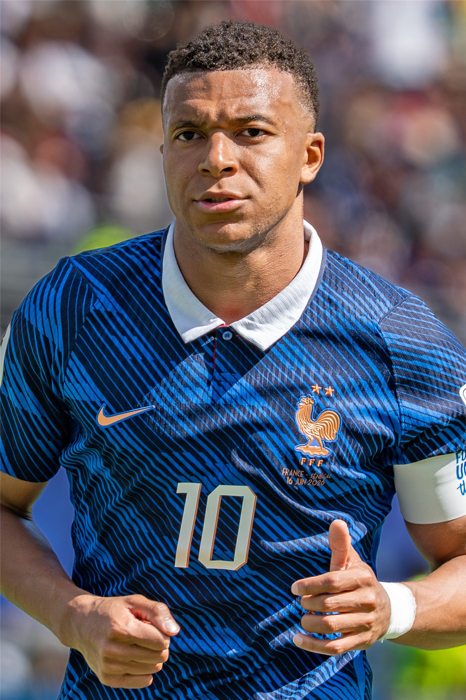

음바페, 3·4위전서 2골… 메시 넘어 통산 득점 1위·골든부트 2연패 눈앞
킬리안 음바페가 3·4위전 후반 두 골을 몰아치며 이번 대회 통산 22골로 득점 선두에 올랐다. 골든부트 2연패가 눈앞에 다가왔다고 조선일보가 전했다.
손기요 기자 · 2026.07.23
橋국제

음바페가 3·4위전에서 후반에만 두 골을 터뜨려 개인 통산 득점 기록을 끌어올렸다. 조선일보는 그가 메시를 넘어 대회 통산 득점 1위로 올라섰고, 사상 첫 골든부트 2연패에 성큼 다가섰다고 보도했다.
광고 문의 · 300×250골든부트는 대회 최다 득점자에게 주어지는 상이다. 두 대회 연속 이 상을 차지한 선수는 지금까지 없었던 만큼, 음바페의 기록은 월드컵 역사에서 이례적인 성취로 평가된다.
다만 프랑스는 3·4위전에서 잉글랜드에 패해 4위에 머물렀다. 개인의 화려한 득점 기록과 팀의 성적이 엇갈린 셈으로, 음바페 본인도 팀 승리를 우선했다는 반응을 보였다.
득점왕 경쟁은 이번 대회 내내 화제였다. 세대 교체기의 스타들이 각축을 벌인 가운데, 음바페의 꾸준한 득점력은 프랑스 공격의 핵으로 작동했다.
華橋時報는 개인 기록과 팀 성적이 언제나 함께 가지는 않는다는 점에 주목한다. 화려한 숫자 뒤에 남는 아쉬움은, 스포츠가 개인의 서사와 공동체의 결과를 동시에 담는다는 사실을 새삼 일깨운다.
출처·참고 (사실 확인용 — 본문은 직접 재작성)
· 조선일보
· 조선일보